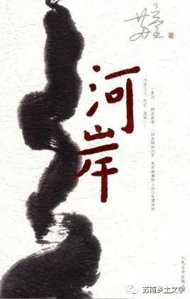
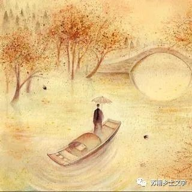

《河岸》
《河岸》是作家苏童的长篇小说，讲述了一条流放船在河上和岸上的故事，展现库文轩、库东亮父子的荒诞命运，书写特定历史时期人的生存境遇。
苏童说，他很早就想创作一部关于河流的作品，“我对河流和水的亲近感，不是来自浪漫的文学想象，也无关个人的美学形态，而是和自己的成长经历有关，我要表达的欲望是源自内心和血液。”不论是祖辈，还是他如今的居处都是傍水而居，因而，苏童认为：“我的乡土是河流，写河流就是我的乡土小说。”
一、自然环境
1.江南水乡河网密布，自然有人生活在船上
别人都生活在土地上，生活在房屋里，我和父亲却生活在船上，这是我父亲十三年前作出的选择，他选择河流，我就只好离开土地，没什么可抱怨的。向阳船队一年四季来往于金雀河上，所以，我和父亲的生活方式更加接近鱼类，时而顺流而下，时而逆流而上，我们的世界是一条奔涌的河流，狭窄而绵长。河上十三年，我经常在船队泊岸的时候回到岸上，去做陆地的客人，可是众所周知，我父亲从岸上消失很久了，他以一种草率而固执的姿态，一步一步地逃离岸上的世界，他的逃逸相当成功，河流隐匿了父亲，也改变了父亲，十三年以后，我从父亲未老先衰的身体上发现了鱼类的某些特征。
我最早注意到的是父亲眼睛和口腔的变化，或许与衰老有关，或许无关，他的眼珠子萎缩了，越缩越小，周边蒙上了一层浓重的白翳，看上去酷似鱼的眼睛。无论白天还是黑夜，他都守在船舱里，消沉地观察着岸上的世界，后半夜他偶尔和衣而睡。
二、时代背景
1.宪兵抓人过程（审问——示众）
示众你还挑地方？轮不到你挑。宪兵队长说，算你聪明，还知道要示众。我们是要拿你示众，拿你的人头示众。
不是先要审问的吗？你们审也不审就枪毙我？吓唬人嘛，我才不信。
注：【宪兵】新中国成立后，对宪兵的称呼改为军事纠察，中国内地宪兵的职责都是由军事纠察来完成的。
2.农村人对待烈士的态度
邓少香的光荣事迹简明扼要地镌刻在一块花岗岩石碑上，石碑竖立在她当年遇难的油坊镇棋亭，供人瞻仰。每逢清明时节，整个金雀河地区的孩子们会到油坊镇来祭扫烈士英魂。孩子们必须把碑文记得滚瓜烂熟，因为回去要引用在作文里这别有用心的说法就像一阵阴风刮过，严重玷污了女烈士的光辉形象。有关方面及时在九龙坡乡派了一个工作组，严加追查，将其定性为反革命谣言，开了三次批判会
3.阶级斗争、文革（老百姓对于阶级斗争批判什么、为什么批判并不理解）
赵春堂严肃地告诉我母亲，封老四的问题已经水落石出，他是一个阶级异己分子！我母亲第一次听说这个深奥的名词，她问赵春堂，什么叫阶级异己分子？赵春堂语焉不详，他说，工作组以后会解释的，反正阶级异己分子是社会的毒瘤，人死了，阴魂不散，流毒还在，工作组说要批封老四，不仅要在广播里批，以后还要开大会，大张旗鼓地批！我母亲是个组织纪律严明的人，她不再质疑什么，当场打开麦克风，用充满激情的声音朗读了批判稿。
4.计划生育
在药店的门口，在早晨人来人往的人民街上，在计划生育的广告宣传栏下
5.科学精神传入农村（迷信胎记）
向广大群众普及宣传的是关于胎记的科学知识，鉴定工作小组利用街头的黑板橱窗，做了一次大规模的科普宣传，他们从科学的人种遗传角度，推翻了人们长期以来对鱼形胎记的盲目崇拜，浅显易懂地告知大家，凡是金雀河地区的居民都属于蒙古人种，每个人儿童时期的屁股上都有青色胎记，如果用唯心主义的角度看待胎记，它也许像一条鱼，如果用唯物主义的角度看，那不过是一滩淤血，即使淤血活脱活现酷似一条鱼，还是淤血，纯属巧合，没有任何科学意义。
5.荒诞的血统论热潮
油坊镇的居民偏偏热衷于没有科学意义的事情。那年秋天油坊镇上忽然流行胎记热，人们狂热地探究着亲朋好友的胎记，同时也从别人的嘴里探听自己胎记的大小形状，开始那股热潮局限在四十岁左右的中年男子圈子里，渐渐地胎记热蔓延开来，从男孩到老汉，凡是男性几乎都卷入了这股热潮。在油坊镇的公共厕所甚至僻静的街角，你可以看到这样的景象，男孩们褪下裤子，撅着屁股，认真地比较各自屁股上的胎记，而热气腾腾的公共浴室是胎记热的天堂，大家一丝不挂，多么方便，人们的目光都肆无忌惮地追逐着别人的屁股，当场作出公正的评价。
7.性羞耻

勃起对她是最大的冒犯。她不管我是故意还是无意，一律严惩不贷。她一边打一边骂，无耻的孩子，下流的孩子，上梁不正下梁歪啊，你翘得那么高要干什么？我让你学他的坏样，让你无耻，让你下流！
母亲对男性生殖器感到厌恶和愤怒，我的也一样受牵连。
感悟
苏童的《河岸》更想表达的是一种精神原乡，精神上的归宿感和归属感。而河网密布的江南地区，我相信也有像鱼一样生活的人，也有把河当做自己的归宿的人。
而且我们可以看到即使是七十八十年代，即使是在新中国成立之后，农村的习俗还是占有非常牢固的地位，阶级斗争、科学精神和农民的脱离之感非常强烈，我想这与乡村现状必定有联系，也有区别和差异。